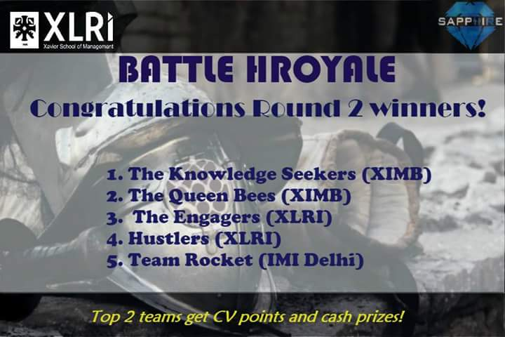

Designed exclusively for XLRI students, Apollo is a cross domain event that is conducted during the fest. Hosted by three committees on campus namely SAPPHIRE (Students’ Association for the Promotion of Personnel Management, Human Resources and Industrial Relations), CRUX (The Consulting and Research Undertaking) and FIRE@X (The Forum for Industrial Relations), the event witnesses participation from teams comprising both the HRM and BM students.
It starts off with an online quiz where teams participated with overwhelming zeal and enthusiasm to crack some challenging questions on human resources and industrial relations. Post the online battle, sixteen teams qualify for the next leg, where SAPPHIRE, FIRE@X and CRUX have their separate events.
Ensemble 2016 saw the second round filled with vigor and razzmatazz throughout the event where the teams competed in a treasure hunt for SAPPHIRE’s event. Teams were judged both on their agility during the hunt and their subject expertise.
This event provided exposure and learning opportunities in diverse areas of human resource management and industrial relations to all the participants. A success, this event was a joy ride yet a new learning experience.
The results of BHR Round 4 are out. Congratulations to the winners :)



Human Resource Management is arguably one of the most important facets of management and management education. Yet if you see the number of competitive engagements present in the space of HR as in comparison to other management disciplines, the ratio is rather regrettable. And it is in such a scenario that SAPPHIRE, the HR committee of XLRI Jamshedpur steps up to fill the void with a unique national level event HR Colosseum.
A one of a kind event, HR Colosseum started in January 2017, as a national level HR event with a variety of innovative events designed to test the different competencies of participants as they square off against some of the brightest minds in the country.
Colosseum plays host to a plethora of engaging events as we at SAPPHIRE look towards fulfilling our goal of spreading awareness and interest in the field of Human Resource Management across the length and breadth of the country.
About the theme:
So as the workforce prepares itself to usher in these times of change, we at SAPPHIRE in XLRI are trying to give the platform for HR and IR leaders across the length and breadth of the country to congregate and try to reach a few useful insights shedding light to what this exciting new future may exactly look like. Further, there will be the brightest HR minds from the best institutions who will enrich the conference with their curiosity, ingenuity and brand new perspectives to view and provide solutions to problems and opportunities of the future.
Thus with this perfect combination of experienced professionals meeting bright students, we look forward to finding the perfect ways to realize the fullest potential of the workforce of the future, through discussions regarding the various methods HR-IR professionals have used to ride through and adapt to these changes. We will have talks from various dignitaries from the industry regarding how they have changed their approach to adapt to the changes in their fields. In addition to this, we will have paper presentations on various tracks, which will be considered for publication in XLRI’s esteemed journal, Management and Labour Studies (MLS), subject to rigorous scholarly view.
The keynote speaker for this year is none other than Indrajeet Sengupta – CHRO, J&J, India and South Asia!
Meet the brains behind the National HR IR Conference 2018.
Theme:
Emerging workforce and its impact on HR
As we move from a world where the baby boomers ruled the workforce to a time when they finally pass on the reins to the millennials, the workforce along with all its needs and expectations are poised to witness a sea of change.
After we delve into the needs and demands of the upcoming workforce, we would understand how the HR functions must adapt themselves with the times. The role of HR in this scenario will be imperative and that is what we are looking to analyse in further detail in this panel. Does the HR need to redefine the processes and systems in place according to the changing needs of the changing workforce? How can we address this generational divide?
The aim of this panel discussion is to let the students enrich & expand their learning from a discussion between industry stalwarts and academicians.
HR PANELShalini Lal
Founder Infinity OD
Gaurav Gupta
CHRO FinTech
Inderjeet Sen Gupta
CHRO JnJ keynote speaker
Indrajit Gupta
Vice president SREI
COMPENSATION AND BENEFITS WORKSHOP
The real question for most working individuals is how their paychecks look. And it is in deciding the perfect structure for compensation and benefits lies one of the most challenging facets of managing human resources.
So to supplement all the classroom and textbook learning, we at Team SAPPHIRE bring to you a unique opportunity to attend a Workshop on Compensation & Benefits that will hold you in good stead as we venture to enter the professional world.
As part of the 2nd National HR-IR Conference 2018, there will be a 2-hour workshop by renowned
Professor Avijit Shastri
on 20th January 2018.
An alumnus of XLRI, Mr Shastri was awarded the 'Economic Times Young Leader of the Year Award' in 2012 and the 'People Matters Emerging Leader Award' in 2015.
A thorough professional with experience in top organizations like Nestle, Cadbury and Tata Motors in a diverse set of roles, he now works as an independent HR professional conducting courses and workshops in educational institutions and professional organizations alike.
All participants attending the workshop will be awarded a certificate.
Early bird registrations, open until 15th January will require a fee of INR 750. All registrations post that will require a fee of INR 1000.
Limited seats available on first come first serve basis! Do not let this opportunity pass!
Interested candidates may
Register Now
and use any of the below Payment Options:
Paytm to 8839821177
Account Details:
Name: XLRI Students Fund
Account Number: 36948735737
IFSC/NEFT: SBIN0004660
Name of the Bank: State Bank of India
Branch: XLRI Jamshedpur
Shalini Lal
Founder Infinity OD
With a degree in Economics from St. Stephen’s, an MBA from IIM A and a PhD from UCLA, it suffices to say that Dr. Shalini Lal has an educational degree par excellence. But what is more impressive is the course she has charted through her career as she worked in various major organizations like Titan, Airtel and Deutsche Bank with a brief teaching stint in a university in between. Currently, Dr. Lal has her own organization Infinity OD, which specializes in leading innovation and organizational change.
A truly remarkable woman, Dr. Lal will be the perfect addition to the 2 nd National HR-IR Conference where she will be a Speaker in the HR panel discussion. Do not miss it!!
An alumnus of XLRI, Mr. Nigam has been at the forefront of the changing face of HR and its practices for more than a decade. From working as, the AGM for an age old organization like Aditya Birla Group to being Senior Vice President and Head, Human Resources in the E-Commerce giant, Snapdeal, Mr. Nigam has worked at both ends of the professional spectrum. Currently engaged as the Vice President-Human Capital of the Omidyar Network, Mr. Nigam is working with a spate of entrepreneurs in the country and providing them with valuable expertise in change management and other related matters.
A veteran speaker and thought leader with a massive repository of experiences, we are indeed honoured to have Mr. Nigam as a speaker in the 2 nd National HR-IR Conference 2018. Be there!!
Saurabh Nigam
Human Capital Specialist
Theme:
Consolidation of labour laws and its impact on HR - IR scenario in India
New labour law reforms aimed at increasing the ease of doing business, coupled with changing workforce aspirations, decreasing influence of unions in various industries and several other factors, is a testament to the fact that employment relations in our country have changed drastically. The central government plans to reduce 44 labour laws to just five as it seeks to make it easier for companies to do business in India. Once passed, these changes will significantly restructure India’s labour rules framework, where nearly a dozen laws related to social security will be merged to create a single social security law or code. As a result, all the stakeholders have had to adapt with times.
The workers, the trade union and the management are the basic parties to it and then it finds its most important application in the case of industrial disputes.
In this context, we will have a discussion on the challenges and opportunities that the initiative would provide for the workforce and businesses in the country. Which laws will be altered and how would that impact the rights of the workers?
The aim of this panel discussion is to let the students enrich & expand their learning from a discussion between industry stalwarts and academicians.
IR PANEL
Madhavi Lall
CHRO Deutsche Bank
Raghunath Pandey
TU leader JUSCO
Rahul Sapkal
Professor National Law University

Saurabh Prakash
Lawyer- Supreme Court
PAPER PRESENTATION
The best submissions will be considered for publication in XLRI’s esteemed journal, Management and Labour Studies (MLS), subject to rigorous scholarly view.
What is the gig economy? In the gig economy temporary positions are common. Instead of creating jobs, companies are increasingly disaggregating work from jobs. This enables them to contract with independent workers for short-term engagements rather than hire full-time employees, who are the most expensive and least flexible source of labour available. On one hand job security is no longer guaranteed, and the good wages, generous benefits and secure retirement that used to go hand in hand with full-time employment are in decline, gig workers enjoy greater choice, autonomy, flexibility, and control – all which drive greater worker satisfaction – than many of their full-time counterparts.
India is in a transforming stage with current government policies focusing on labour reforms. The NDA government has put its weight behind ‘Make in India’ campaign. As part of these reforms, a series of new bills have been drafted/ introduced in the parliament, the latest being code on wages bill 2017. Some see these changes as a positive step towards encouraging employment generation and focus on production as the focus is on consolidation of labour laws in the country. The Confederation of Indian Industry has stated “We have been recommending these key reforms for bringing in simplification and flexibility in engagement and deployment of labour.” However, the government also faces a lot of roadblocks on its way. Its labour wing Bhartiya Mazdoor Sangh has protested these proposed legislations. These laws will certainly influence the approach of HR across various sectors.
The best submissions for each track will be selected for presentation in the conference.
Top two papers will be given “Best paper award”, including cash prizes.
BHR Finale
Leadership Talk
EM Rao
Professor – HR/IR at Xavier Institute of Management
XLRI is known for its glittering array of stalwarts amongst its faculty and EM Rao can easily be considered to be one of the most decorated ones to have graced this institution.
A professor par excellence, Professor Rao has been a consultant to some of the biggest business names in the country including ONGC, Ranbaxy, ITC, Hero Honda to name a few.
A writer of acclaimed books like Industrial Jurisprudence: A Critical Commentary, he has also published numerous papers and an honorary member of the NIPM, IIRA, NLLA and NHRD networks.
As the country deliberates on whether the “Consolidation of Labour Laws” is going to be an important affair, experience what our very own professor has to say about the same.
Join us in the 2nd National HR-IR Conference as Dr. Rao enthrals us in a special session where he talks about the changing landscape of labour laws in India. 21st January 2 pm.
Do not Miss it!!
Employee Auction
Teams would be given a list of competencies that their organisation is looking for and they would have to hire employees according to those competencies. Along with the candidate hired by each team, profiles of 10 candidates would be available for hiring by any team. Teams would have to bid for their target candidates within the bidding window to complete the transfers. They can also poach employees to competing firms. There will be a fixed allotted budget. The team with the maximum correct hires in minimum cost would be awarded maximum points.
Teams would be given a list of competencies that their organisation is looking for and they would have to hire employees according to those competencies. Along with the candidate hired by each team, profiles of 10 candidates would be available for hiring by any team. Teams would have to bid for their target candidates within the bidding window to complete the transfers. They can also poach employees to competing firms. There will be a fixed allotted budget. The team with the maximum correct hires in minimum cost would be awarded maximum points.
Organized for the annual inter college fest Ensemble Valhalla, this flagship HR event comprises of two rounds.
The first round is an online quiz that tests the HR domain knowledge of the participants.
The finale is conducted at XLRI, Jamshedpur, with finalists from top B-schools of the country coming to battle their wits out in case studies and compete for prizes. Interestingly, participation in the event isn’t restricted to only the HR folks. Students from different colleges bring fresh perspectives to the case studies which is judged by the faculty of XLRI.
Each team presents their pitch during the fest to justify the different perspectives of the case and the assumptions made by them. Amidst this, all the teams proved their merit convincingly making it hard to take a final call on the winner.
The event overall, is a great learning opportunity for all the participants and a platform to explore varied approaches to the same problem. The students get an opportunity to appreciate the valuable and insightful feedback they receive on their presentations from the jury.
Truly a war of wits!